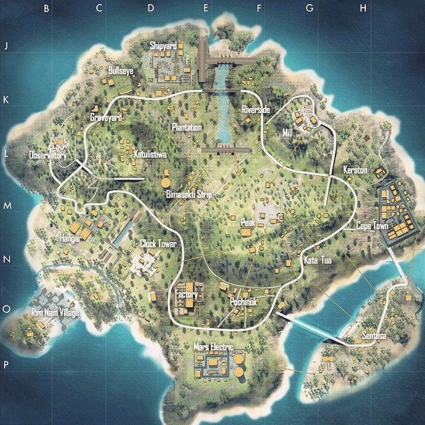
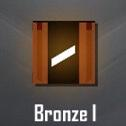

Free Fire é um jogo eletrônico mobile de ação-aventura do gênero battle royale, desenvolvido pela desenvolvedora vietnamita 111dots Studio e publicado pela Garena.
O jogo obteve um beta aberto em novembro de 2017 e foi lançado oficialmente para Android de iOS em 4 de dezembro de 2017.
O jogo consiste de até no total de cinquenta jogadores que caem de paraquedas em uma ilha em busca de armas e equipamentos a fim de matar os outros jogadores. Os jogadores escolhem à vontade a posição inicial, pegam armas e suprimentos para aumentar o tempo de vida na batalha.
Inspirado em PlayerUnknown’s Battlegrounds (PUBG) – outro jogo do mesmo gênero, Garena Free Fire se tornou um sucesso instantâneo, atingindo, até outubro de 2018, a marca de 7,5 milhões de jogadores (refletidos pela quantidade de downloads) somente em dispositivos Android, tornando-se um dos jogos de Android mais baixados de 2018, batendo grandes títulos (como PUBG Mobile e Clash Royale).
JOGABILIDADE
Garena Free Fire é um jogo eletrônico de ação-aventura do gênero battle royale visto numa perspectiva em terceira pessoa.
Para começar a jogar é necessário criar uma conta pessoal no jogo, no qual você tem direito a escolher se deseja criar uma conta própria do jogo ou se desejar conectar a uma conta de alguma rede social, como o Facebook por exemplo.
Após efetuar o login com sucesso o jogador deve configurar seu perfil e explorar o jogo afim de obter conhecimento sobre o game e os métodos utilizado para jogar.
Feito tudo isso o jogador pode iniciar uma partida clicando no botão “Modo Clássico” ou "Partida Ranqueada" da Bermuda (Campo de batalha) e então aguardar até que o avião voe por cima da ilha
RECEPÇÃO
Em sua revisão feita para o website asiático Game Prime, Muhammad Syahrir comentou sobre os controles do jogo dizendo:
"Se [você] não estiver familiarizado com esses tipos de controles, existe uma grande possibilidade de você entrar em pânico.
[...] Mas não se preocupe, você se acostumará rapidamente com o passar do tempo."[12] Em questão dos gráficos, ele disse que apesar de serem "vitais para alguns jogadores", ele observou que isso "tem um benefício para celulares de média e baixa especificação" e concluiu sua revisão dizendo:
"Se jogos com bons gráficos são sua praia, então não recomendamos que você jogue Free Fire Battlegrounds. Mas se você gosta de jogos battle royale e quer se divertir com seus amigos, você deve definitivamente jogar.
Mapas

MAPA BERMUDA
O Mapa Bermuda foi o primeiro Mapa, chegou junto com o a versão beta do jogo,
mas passou e ainda passa por modificações em suas cidades a cada atualização do jogo.
Factory, Peak e Clock Tower são cidades bastantes disputadas, elas tem alta concentração de loot e são pontos de batalhas constantes!
O mapa possui muitas áreas de loots: Observatory, Cape Town, Factory e Ilha Sentosa são muito procurados na hora da aterrissagem por oferecer uma boa quantidade de armamentos e itens para os jogadores.
O servidor avançado de Free Fire conta com a versão 2.0 de Bermuda, que está em fase de testes para os jogadores que tem acesso ao servidor.
É esperado que essa nova versão faça parte do jogo num futuro próximo após o surgimento da campanha Plano Bermuda, que deu pequenas pistas de como o novo mapa irá se parecer.
A versão 2.0 conta com quatro locais diferentes: Academy, Fisherman Creek, Hydrapower e Yagami Garden.
O bermuda 2.0 é uma versao modificada do mapa bermuda principal,
ele em questão de tamanho comparado ao mapa bermuda principal ele é bem menor,
mas levando em questão o bermuda 2.0 é bem mais moderno que o principal,
bem mais variedades de casa, mais árvores espalhadas pelo mapa, e bem menos morros comparado ao bermuda principal.
O bermuda 2.0 foi lançado do dia 13 de agosto de 2020 para os jogadores, mas apenas no modo contra squad,
e com essa adiçao do bermuda 2.0 vieram tambem novas cidades adicionando as cidades:
Academy, Fisherman Creek, Hydrapower e Yagami Garden.
No entanto quando lançou o mapa Bermuda 2.0 estava em fase teste ainda e era por tempo limitado.
A Garena(empresa dona do free fire)so veio a publicar o mapa permanente no jogo no dia 4 de fevereiro de 2021,
depois desse periodo os jogadores poderiam jogar no mapa bermuda 2.0 em qualquer modo de jogo.
Purgatório foi o segundo Mapa a chegar no Free Fire, uma ilha grande, onde os jogadores deverão percorrer grandes distâncias em descampados enormes até chegar próximo de algum "cover".
Brasília, Central e MoatHouse são os lugares mais perigosos do Purgatório, quer se manter vivo por mais tempo sem se arriscar? Fique longe desses lugares!
Purgatório é um mapa que divide opiniões dentro da comunidade de Free Fire. Enquanto alguns jogadores se queixam de sua longa extensão e alta variabilidade topográfica e de obstáculos (montanhas, morros e árvores),
outros consideram este o melhor mapa do jogo por permitir diferentes possibilidades, tanto para quem quer engajar em embates rapidamente ou jogar mais cautelosamente.
É um mapa que permite tanto a "rushada" quanto a "camperagem". O mapa foi introduzido no jogo em 2018, sendo o segundo do battle royale da Garena.
Já o Mapa Kalari é o mais novo, chegando no Free Fire na atualização de Dezembro/2019. É o mapa do Deserto, bastante solicitado pela comunidade de jogadores.
A maior novidade em mapa de Free Fire é Kalahari, que foi introduzido no battle royale no último mês de fevereiro. O nome foi inspirado no deserto africano de 900 m², com sua maior parte compreendida no território de Botswana, no sul do continente.
Seu nome origina de uma etnia local e significa "lugar vasto" - curiosamente, Kalahari é o menor dos três mapas do Free Fire, contendo apenas 16 km². Isso permite que os combates sejam engajados em tempo mais curto, tornando-o um mapa muito dinâmico e cheio de ação.
O Kalahari é composto por 13 cidades sendo elas:Assentamento, Santuário, Camara, Prisão, Porto Seguro, Playground, Ruínas, Labirinto, Cemiterio de elefante, Posto de Comando, Pedra do baú, Refinaria e Submarino.
A personagem Misha chegou ao Free Fire na atualização de Abril 2018 e um fato que poucos sabem sobre Misha é que ela é irmã de Maxim,
um outro personagem do Free Fire. Dá pra perceber a semelhança entre Maxim e Misha ao olhar detalhadamente ambos os personagens.
INFORMAÇÕES
Idade: 19 anos;
Data de nascimento: 26 de Julho;
Habilidade da Misha Free Fire
A habilidade especial da personagem Misha no Free Fire chama-se Pós Combustão, que consiste em aumentar a velocidade de condução, além de diminuir o dano causado quando estiver dentro dos veículos (a partir de Abril 2021).
Com essa Habilidade, Misha pode aumentar em até 20% a velocidade dos veículos no Free Fire e reduzir o dano em até 30%.
A habilidade desta personagem é passiva e pode ser equipada por outros personagens
A Olivia chegou ao Free Fire com a Atualização de Fevereiro de 2018, com outros três personagens (Ford, Kelly e Andrew) e como uma personagem jogável,
Olivia custa 2000 moedas de ouro para ser desbloqueada.
INFORMAÇÕES
Idade: 29 anos;
Data de nascimento: 11 de Outubro;
Habilidade da Olivia Free Fire
A habilidade especial da personagem Olivia no Free Fire chama-se Toque de Cura, que consiste em dar HP extra aos jogadores revividos pela Olivia (a partir de Abril 2021).
Com essa Habilidade, Olivia pode aumentar em até 70 pontos de vida HP ao salvar seus aliados no Free Fire.
A habilidade desta personagem é passiva e pode ser equipada por outros personagens.
Neste artigo vamos falar sobre o personagem Nikita, Informações, Dicas e Estratégias de utilização dessa personagem!
O personagem Nikita entrou no Free Fire na atualização de Março/2018.
INFORMAÇÕES
22 anos
Data de nascimento: 11 novembro
Nikita é uma guarda-costas profissional.
Habilidade da Nikita Free Fire
Especialista em arma de fogo: Nikita é uma Guarda Costas. O recarregamento de uma submetralhadora acelera em até 24%.
Com essa Habilidade, a Nikita aumenta em até 24% a velocidade de recarregar uma submetralhadora!
O personagem Miguel entrou no Free Fire na atualização de Setembro/2018.
Ele é o único personagem Brasileiro no Free Fire e, apesar da Garena não ter confirmado, os fãs mais assíduos garantem que ele foi inspirado no ator Wagner Moura, quando o mesmo atuou no filme Tropa de Elite.
INFORMAÇÕES
Idade: 26 anos
Aniversário: 7 de setembro
Habilidade do Miguel Free Fire
Assassino Louco: Miguel é o comandante de um seção nas forças especiais, ganhe EP por cada abate.
Com essa Habilidade, Miguel ganha Vida Extra a cada adversário que ele mata!
O personagem Paloma entrou no Free Fire na atualização de Agosto/2018.
Uma traficante de armamento pesado, Paloma é tão bonita como mortífera. Uma antiga modelo que todas as garotas idolatravam virou especialista de venda de armas. Se há negócio sujo, Paloma está lá para pegar o lucro.
INFORMAÇOES
Idade: 28 anos
Aniversário: 4 de agosto
Habilidade da Paloma Free Fire
Lidando com Armas: Paloma é a rainha das armas do submundo, capaz de transportar munições de AR sem ocupar espaço na mochila.
Com essa Habilidade, a Paloma ganha Espaço Extra na mochila para carregar balas AR!
O personagem Andrew entrou no Free Fire na atualização de Fevereiro/2018.
Ele é um especialista em coletes, aumentando a durabilidade dos coletes de armadura, reduzindo o dano sofrido.
INFORMAÇÕES
Idade: 42 anos;
Data de nascimento: 25 de Dezembro;
Habilidade do Andrew
Andrew possui uma habilidade especial, chamada de "Especialista de Armadura", que possui a capacidade de diminuir a perda da durabilidade de colete.
A habilidade do Andrew Free Fire diminui o dano sofrido no colete em até 12%.
O personagem Ford entrou no Free Fire na atualização de Fevereiro/2018.
Ele é treinado no mar e é extremamente duro. Sua habilidade Vontade de Ferro dele reduz o dano do gás em 4 a 24% quando está fora da zona de segurança (SAFE).
INFORMAÇÕES
31 anos
Data de nascimento: 23 de Janeiro
Habilidade do Ford Free Fire
Vontade de Ferro: Devido ao seu rigoroso treinamento, Ford sofre menos dano na zona radioativa (famoso Gás) do que os outros personagens.
Com essa Habilidade, Ford diminui o dano sofrido dentro da zona de Gás.
Neste artigo vamos falar sobre o personagem Kla, Informações, Dicas e Estratégias de utilização desse personagem!
O personagem Kla entrou no Free Fire na atualização de Junho/2018.
O KLA é um boxeador Tailandês!
INFORMAÇÕES
Idade: 27 anos
Aniversário: 14 de dezembro
Kla é um renomado artista marcial, especializada em Muay Thai.
Habilidade do Kla Free Fire
Assassino Louco: Kla é um renomado praticante de Muay Thai, sua habilidade aumenta o dano no punho.
Com essa Habilidade, Kla pode derrubar facilmente um adversário com apenas um soco na cabeça!
O personagem Maxim entrou no Free Fire na atualização de Maio/2018.
No momento da liberação do Maxim ao jogo, a Garena informou que o novo personagem gosta de fazer videos, ele não foi muito bem aceito pelos jogadores em geral.
INFORMAÇÕES
17 anos
Data de nascimento: 30 de novembro
Habilidade do Maxim Free Fire
Glutonaria: Maxim é um comedor profissional, sua habilidade reduz o tempo para comer cogumelos e usar kits médicos.
Com essa Habilidade, Maxim pode comer Cogumelos ou usar Kits Médicos até 12% mais rápido.
O personagem Kelly entrou no Free Fire na atualização de Janeiro/2018.
Sua habilidade é útil para escapar de inimigos avistados, correr para zonas seguras e indiretamente também acelerar o processo de encontrar armas.
INFORMAÇÕES
Idade: 17 anos;
Data de nascimento: 01 de Abril;
Kelly é uma velocista da escola secundária e também é conhecida como Shimada Kiriko.
Habilidade da Kelly Free Fire
Kelly possui uma habilidade passiva, chamada de "Corredora", que consiste em correr mais rápido do que qualquer outro personagem do jogo.
A perícia de Corredora também pode ser melhorada aumentando o nível da personagem Kelly.
A personagem Caroline entrou no Free Fire na atualização de Outubro/2018.
Caroline vem de uma família rica, sendo assim, a Caroline é a personagem mais rica do Free Fire, mas isso não significa que ela não possa lidar com uma arma!
INFORMAÇÕES
Idade: 17 anos
Data de Nascimento: 10 de outubro
Caroline, uma garota que cresceu em uma família extremamente rica.
Habilidade da Caroline Free Fire
Agilidade: Aumenta a velocidade de movimento enquanto estiver usando uma Espingarda!
O personagem Antonio entrou no Free Fire na atualização de Dezembro/2018.
Antonio - o Gangster vai ser um novo personagem para entrar na guerra do universo Free Fire! Com as suas habilidades especiais, Antonio prometeu ser o melhor guerreiro em todos as partidas!
INFORMAÇÕES
Idade: 30 anos;
Data de nascimento: 01 de Agosto;
Habilidade do Antonio Free Fire
Antonio possui uma habilidade especial, chamada de "Espírito Gangster", com o objetivo de aumentar seu HP logo no início das partidas.
Com a habilidade do Antonio Free Fire, o personagem recebe até 35 de pontos de vida a mais na partida.
O personagem Wukong entrou no Free Fire na atualização de Janeiro/2019.
O Wukong é um personagem bem diferente dos demais, é o único personagem que não é humano.
A personagem Moco chegou ao Free Fire na atualização de Janeiro/2019.
A Moco é um personagem bem diferente dos demais, ela tem uma atividade ativa que serve para todos os integrantes da equipe.
Moco é um "hacker" do Free Fire!
INFORMAÇÕES
Idade: 20 anos;
Data de nascimento: 13 de Fevereiro;
Habilidade da Moco Free Fire
Moco Free Fire possui uma habilidade especial, chamada de "Olho Hacker", que marca os inimigos que Moco atirou por alguns segundos.
Com essa Habilidade, Moco pode mostra a posição dos inimigos para todo o seu SQUAD ou DUO por um curto espaço de tempo. Mas somente quando ela ataca o inimigo.
O personagem Hayato entrou no Free Fire na atualização de Março/2019.
Hayato é um Samurai Lendário e chegou no Free Fire para proteger, secretamente, o seu primo.
INFORMAÇÕES
Idade: 20 anos;
Data de nascimento: 21 de Março;
Hayato, um garoto de uma lendária família de Samurais.
Habilidade do Hayato Free Fire
Hayato possui uma habilidade especial, chamada de "Bushido", com o objetivo de aumentar a penetração do dano na armadura dos adversários.
Com a habilidade do Hayato Free Fire, o personagem consegue dar maiores danos quando ele tem menos vida. Quanto menos vida ele tiver, mais dano ele arrancará dos inimigos!.
A personagem Laura chegou ao Free Fire na atualização de Maio/2019.
Laura é uma Agente Secreta!
INFORMAÇÕES
Idade: 24 anos;
Data de nascimento: 21 de Maio;
Laura é uma Deusa natural da precisão, por isso lhe foi dada uma grande variedades de missões secretas.
Habilidade da Laura Free Fire
Laura possui uma habilidade especial, chamada de "Atiradora Afiada", que consiste em ter uma maior precisão no disparo ao abrir a Mira da arma.
O personagem Rafael chegou ao Free Fire na atualização de Junho/2019, ele é um perigoso mercenário e tem a habilidade de morte silenciosa!
Sua habilidade tem um efeito silenciador usando snipers e rifles de precisão. Inimigos acertados e deitados perdem vida mais rápido.
INFORMAÇÕES
Idade: 31 anos;
Data de nascimento: 9 de Setembro;
Rafael é um perigoso mercenário. Seu objetivo é trazer justiça para o mundo.
Habilidade do Rafael Free Fire
A habilidade especial do personagem Rafael no Free Fire chama-se Morte Silenciosa, que consiste em ter um efeito silenciador usando snipers e rifles de precisão. Inimigos acertados e deitados perdem vida mais rápido.
Com essa Habilidade, Rafael pode atirar silenciosamente sem aparecer no minimapa do jogo, dificultando a percepção dos adversários.
A habilidade deste personagem é passiva e pode ser equipada por outros personagens.
A personagem A124 entrou no Free Fire na atualização de Agosto/2019.
Eu acho que cyborgs como eu tem a tendência de ser paranoicos sobre a própria origem...
INFORMAÇÕES
Idade: 18 anos;
Data de nascimento: 01 de Janeiro;
A124 é um robô feito com a mais moderna tecnologia, composta por genomas humanos e metais.
Habilidade da A124 Free Fire
A124 possui uma habilidade especial, chamada de "Emoção da Batalha", que permite transformar vida EP (amarela) em HP.
A habilidade da A124 é ativa e para ativar, basta clicar no botão do coração, a personagem consegue transformar vida EP (da barra amarela) em vida HP (barra de vida branca) em até 50 pontos (nível máximo).
O personagem Joseph entrou no Free Fire na atualização de Setembro/2019.>
O Joseph foi o personagem mais barato da história do Free Fire, ele chegou custando apenas 1 Diamante no evento de recarga.
INFORMAÇÕES
45 anos
Data de nascimento: 14 de Fevereiro;
Joseph é conhecido como um físico charmoso.
Habilidade do Joseph Free Fire
Movimento Nutty: A velocidade de movimento aumenta temporariamente ao sofrer de dano.
Com a tecnologia desenvolvida por ele mesmo, Joseph possui velocidade de movimento aumentada ao sofrer dano.
O Alok chegou ao Free Fire na atualização de Novembro/2019 e desde então é o personagem mais utilizado do jogo,
com sua habilidade de criar uma aura que aumenta a velocidade e recupera vida HP dos aliados próximos.
De acordo com a assessoria da Garena, "O nome de Alok surgiu ainda em janeiro de 2019, quando a Garena descobriu que o DJ é um fã genuíno de Free Fire.
Conversamos com o Alok e surgiu a ideia de colocá-lo dentro do jogo." Assim, o DJ virou um personagem dentro de Free Fire em 11 de novembro de 2019.
INFORMAÇÕES
Idade: 28 anos;
Data de nascimento: 26 de Agosto;
Começando a sua carreira na música, Alok saiu do Brasil e viajou por todo o mundo. Seu nome significa "luz".
Habilidade do Alok Free Fire
A habilidade especial do personagem Alok no Free Fire é a Som na Caixa, que consiste em criar uma aura que aumenta a velocidade e recupera HP dos aliados próximos. Efeito não acumulativo.
Com essa Habilidade, Alok pode recuperar a vida de todos do seu SQUAD que estiverem por perto, além disso, a velocidade é aumentada.
A habilidade deste personagem é ativa e não pode ser utilizada por outros personagens que também possuam habilidade ativa.
O personagem Alvaro Free Fire veio de uma família de militares e se juntou ao exército com 14 anos, quando descobriu seu gosto especial por explosivos.
Ele costumava montar suas próprias bombas e brincar nos fundos da casa de seus pais. Ao mesmo tempo, Alvaro não era visto como uma pessoa muito confiável.
O personagem Alvaro entrou no Free Fire na atualização de Janeiro/2020.
OLHA A BOMBA! O personagem Alvaro está disponível e você já pode explodir as coisas por aí.
INFORMAÇÕES
Idade: 26 anos;
Data de nascimento: 28 de Maio;
Habilidade do Alvaro Free Fire
Alvaro é um demolidor habilidoso que prospera no caos. Sua habilidade única "Arte de Demolição" aumenta o alcance e o dano dos explosivos no jogo. Isso inclui granadas, minas terrestres, Crossbow e Lança Granadas. No entanto, sua habilidade ainda empalidece quando comparada ao Alok ou Maxim.
Arte da Demolição: Aumenta o dano e a área de dano de armas de explosão.
A habilidade do personagem Alvaro tem a função de dar mais dano com armas de explosões, como Granadas, Crossbow, Lança Granadas e Minas Terrestres. Além disso, o espaço de dano na explosão é maior!
A personagem Notora entrou no Free Fire na atualização de Dezembro/2019.
Você já experimentou a Notora no jogo? Quem você prefere, ela ou Misha? Vamos conhecer a Notora um pouco melhor!
INFORMAÇÕES
27 anos
Data de nascimento: 22 de Março;
Notora é uma corredora especializada em motocicletas.
Habilidade da Notora Free Fire
Cura Veloz: Recupera HP de si mesma e dos companheiros de equipe quando dentro de um veículo. Efeito não acumulativo.
Com essa habilidade, Notora pode recuperar a vida de todos do seu SQUAD que estiverem dentro do veículo.
A personagem Shani entrou no Free Fire na atualização de Outubro/2019.
Shani é a amiga mais próxima de outra personagem a A124, elas se conheceram no tempo do ferro velho.
INFORMAÇÕES
30 anos
Data de nascimento: 15 de Junho;
Shani é o que se pode chamar de autodidata. Seus pais foram mortos por uma explosão quando ela tinha 18 anos.
Habilidade da Shani Free Fire
Reciclagem de armadura: Recupere durabilidade de armadura depois de cada abate. Durabilidade extra pode melhorar sua armadura até o lvl. 3.
Shani usa sua habilidade para recuperar seus coletes e capacetes, mas o melhor de tudo é que ela também pode fazer um upgrade no nível de suas armaduras caso a vida deles estejam cheias.
Steffie Free Fire tem 23 anos e é estudante de arte, Steffie faz parte da comunidade cultural local há anos. Além de seus incríveis murais pela cidade, ela é conhecida por sua simpatia e benfeitorias, levando oficinas de arte a diversas partes de sua região.
Uma de suas obras mais conhecidas se chama "Caos Criativo", localizada nas paredes norte e oeste do Museu de Arte Moderna. A obra cobre todo o edifício, indo do teto ao chão e retrata crianças e jovens locais se divertindo em atividades diárias: desenhando a calçada com giz, treinando parkour e outros tentando criar um som novo em frente de casa enquanto seus amigos praticam manobras de skate.
IMFORMAÇÕES
Idade: 23 anos;
Data de nascimento: 22 de Março;
Habilidade da Steffie Free Fire
A habilidade da personagem Steffie chama-se "Abrigo de Tinta". Ela cria um grafite que reduz o dano de explosivos e tiros em 5% por alguns segundos. Tempo de recarga: 45 segundos. Efeito não acumulativo.
Recentemente, os desenvolvedores anunciaram uma colaboração com o renomado artista americano KSHMR. Como parte disso, um novo personagem chamado 'Kamir' fez o seu caminho no Free Fire. Uma nova música, intitulada 'One More Round', de KSHMR, também foi lançada no dia 15 de outubro de 2020.
Embora o Kamir Free Fire tenha sido adicionado ao jogo, os jogadores podem o chamar de Capitão Booyah.
Kamir não é o primeiro personagem que foi baseado em uma pessoal da vida real. Vários outros, como DJ Alok e Jai, também são baseados em pessoas.
INFORMAÇÕES
Idade: 31 anos;
Data de nascimento: 06 de Outubro;
Habilidade do Kamir Free Fire
Kamir tem uma habilidade especial chamada de Lição Professor, ela é ativa e se divide em outras 3, todas com foco na vida EP.
VIDA EP: Abreviatura de Energy Points (Pontos de Energia, em inglês), funciona como uma sobrevida. Os pontos acumulados na barra amarela ao consumir cogumelos ou Inaladores, são usados para recuperar pontos de vida, até que esta seja completa ou que os pontos sejam esgotados.
Os jogadores da Índia, devem conhecer Hrithik Roshan, que é uma das maiores estrelas da indústria cinematográfica indiana. Os desenvolvedores do Garena Free Fire anunciaram recentemente uma colaboração com o ator e criaram um novo personagem - Jai, baseado nele.
Jai não é o primeiro personagem baseado em uma personalidade da vida real. Outros personagens como Jota, Alok e Luqueta também são baseados em pessoas da vida real.
INFORMAÇÕES
Idade: 30 anos;
Data de nascimento: 21 de Setembro;
Habilidade do Jai Free Fire
Sua descrição no jogo é: "Jai é um renomado agente da SWAT".
A habilidade do Jai é chamada de Recarga Furiosa, que recarrega automaticamente o carregador da arma em 10% de sua capacidade máxima após derrubar um oponente. Com o aumento do nível, a habilidade também aumenta. No nível máximo, ele recarrega automaticamente o cartucho em 25%.
Luqueta Free Fire é o 28º personagem do jogo e chegou em Agosto para driblar os oponentes e subir vinda HP a cada abate.
De acordo com as informações exclusivas conseguidas pela equipe do Free Fire Mania, o personagem Luqueta ficou conhecido como Lucas, é uma estrela em ascensão do futebol, tem 20 anos de idade e é nascido em 10 de Junho.
INFORMAÇÕES
Idade: 20 anos;
Data de nascimento: 10 de Junho;
Habilidade do Luqueta Free Fire
A habilidade do personagem Luqueta chama-se Goleada, o objeto é ganhar vida HP máxima a cada abate na partida.
No começo alguns jogadores podem achar a habilidade do Luqueta similar a de outro personagem, o Antonio, que recebe até 35 de vida extra no começo da partida.
Mas ao contrário do Antonio, o personagem Luqueta começa igual aos demais personagens, com 200 de vida HP e seu HP irá subir a cada abate.
Evelyn Free Fire é a personagem detetive do jogo e com sua habilidade chamada de "entregando o ouro", promete desvendar todos os adversários escondidos pelos mapas. A nova personagem promete mudar o rumo do Free Fire mais uma vez!
Evelyn é o nome escolhido no servidor brasileiro para a personagem Clu, que foi registrada com este nome no Servidor Avançado.
INFORMAÇÕES
Idade: 24 anos;
Data de nascimento: 23 de Julho;
Habiçidade da Evelyn Free Fire
Habilidade Evelyn Free Fire
Evelyn possui uma habilidade especial, chamada de "Entregando o Ouro", que permite mostrar a posição de todos inimigos que não estejam agachados ou deitados. Caso a personagem se encontre no nível 4, a habilidade é compartilhada com todos os membros de equipe.
Evelyn é uma detetive particular fantástica! Sua habilidade é ATIVA e irá localizar os inimigos que estiverem por perto.
Desde 3 de junho de 2020, temos um novo personagem chamado Wolfrahh Free Fire. Com uma habilidade chamada Centro das Atenções, Wolfrahh é capaz de aumentar o dano aos inimigos e também diminuir o dano sofrido em sua cabeça.
Além disso, quanto mais jogadores assistirem a um jogador utilizando o personagem Wolfrahh, mais dano ele dará aos inimigos. Isso certamente está relacionado a atividade do Wolfrahh, pois ele é um streamer.
INFORMAÇÕES
Idade: 19 anos;
Data de nascimento: 29 de Abril;
Habilidade do Wolfrahh Free Fire
Wolfrahh Free Fire possui a habilidade "Centro das Atenções" que tem o objetivo de reduzir o dano de tiros na cabeça, ao mesmo tempo em que o dano aos braços e pernas do inimigo aumenta.
Com essa habilidade os jogadores que tiverem utilizando o novo personagem Wolfrahh darão menos dano ao atirar na cabeça, em compensação, o dano nos braços e pernas aumentam.
Kapella é uma cantora, nasceu no dia 17 de julho e possui 21 anos, seu estilo musical é pop e kpop. Kapella se tornou famosa é um concurso de talento musical quando tinha 18 anos.
“A Salvadora”, esse é o apelido da Kapella, por causa de suas músicas ajudou muita gente a sair do fundo do poço.
INFORMAÇÕES
Idade: 21 anos;
Data de nascimento: 17 de Julho;
Habilidade da Kapella Free Fire
A personagem Kapella tem a habilidade de Canção de Cura, é passiva e pode ser utilizada em outros personagens.
Com esta habilidade, a Kapella tem a função de aumentar os efeitos dos itens que dão vida HP, a exemplo do Kit Médico e da Pistola de Tratamento. Além disso, aumenta também os efeitos das habilidades que dão vida HP e mais, diminui a taxa de perda de HP dos amigos ao morrer. Efeitos não são acumulativos.
Jota Free Fire é um dublê sinistro e um especialista em parkour, é o primeiro personagem Indonésio do jogo.
O produtor do Garena Free Fire Indonésia, Christian Wihananto Hartono, disse que a presença desse personagem local era o sonho dos sobreviventes da Indonésia há muito tempo.
"A presença de personagens locais no jogo Free Fire é o desejo dos jogadores indonésios há muito tempo e finalmente conseguimos cumprir esse desejo. A própria Garena Free Fire Indonésia está muito satisfeita por trabalhar com um orgulhoso ator indonésio, Joe Taslim, na criação deste personagem Jota", disse Christian.
INFORMAÇÕES
Idade: 31 anos;
Data de nascimento: 23 de Junho;
Habilidade do Jota Free Fire
A habilidade do novo personagem é para aqueles jogadores que utilizam Armas de SMG (Submetralhadoras) e SG (Espingardas) e deve agradar a grande maioria dos jogadores.
Habilidade: Usar SMG ou Espingardas para abates restaura HP.
Com o Jota, no nível máximo, usar Submetralhadoras ou Espingardas para abates restaura 40 de HP, tempo de recarga de 5 segundos.
A personagem Diana Free Fire é uma rebelde e uma aventureira, está mulher vestiu ilegalmente um herói militar com vestido e flores para celebrar o dia da terra. Ela afirma que o ato não feriu ninguém e, ao mesmo tempo, ajudou o planeta.
Diana tem 25 anos e chega ao Free Fire na atualização de setembro de 2020.
INFORMAÇÕES
Idade: 25 anos;
Data de nascimento: 08 de Dezembro;
Habilidade da Diana Free Fire
A habilidade especial da personagem Diana no Free Fire chama-se Baladeira, que consiste em reduzir o dano e o tempo de recuperação de quedas. Reduz o a taxa de recuo e o máximo de recuo.
Com essa Habilidade, Diana pode reduzir o dano de queda em até 50% assim como o recuo em 10%.
A habilidade desta personagem é passiva e pode ser equipada por outros personagens.
Chrono Free Fire é um personagem do jogo da Garena inspirado no craque de futebol Cristiano Ronaldo, ele chegou com a atualização de Dezembro/2020 e trouxe uma habilidade chamada Escudo Tunado. Confira a ficha técnica e a história do Chrono dentro do jogo.
A parceria entre o CR7 e o Free Fire que resultou no personagem Chrono foi anunciada em 07 de Dezembro, através da atualização OB25. No início deste mês, houve vários vazamentos sobre uma possível colaboração entre o Free Fire e Cristiano Ronaldo. Garena confirmou esses rumores e finalmente anunciou a colaboração oficial com a mega estrela do futebol hoje.
INFORMAÇÕES
Gênero: masculino;
Idade: 35 anos;
Data de nascimento: 05 de Fevereiro;
Habilidade do Chrono Free Fire
A habilidade especial do personagem Chrono no Free Fire chama-se Escudo Tunado, que consiste em criar um campo de força que bloqueia o dano dos inimigos..
Com essa Habilidade, Chrono, além de criar um campo de força que bloqueia o dano dos inimigos, é possível atirar nos inimigos de dentro do campo de força. Velocidade de movimento aumenta, e aliados dentro do campo de força recebem um bônus de velocidade durante o período de ativação da habilidade.
A habilidade deste personagem é ativa e não pode ser equipada por outros personagens.
Free Fire foi o jogo mais baixado do mundo em 2020, o Battle Royale consegue arrebanhar fãs por todos os continentes e muito desse sucesso se dá por conta das diversas atualizações do jogo, trazendo novos recursos, pets, armas e personagens, sendo o Shiro Free Fire o que vamos falar nesta publicação.
O personagem Shiro com sua habilidade passiva, onde não é necessário ativar, deve chegar para ser utilizado em conjunto com Alok ou Chrono.
Uma curiosidade sobre o Shiro é que o designer do personagem e boa parte dos vídeos partiu do escritório da Garena no Brasil, a equipe desenhou e distribuiu a novidade para o mundo inteiro.
INFORMAÇÕES
Gênero: masculino;
Idade: 19 anos;
Data de nascimento: 20 de Novembro;
Habilidade do SHIRO Free Fire
A habilidade especial do personagem Shiro no Free Fire chama-se Delivery de Dano, que consiste em marcar um atirador que atinga o Shiro em até 80 metros, além disso, o adversário marcado terá dano adicional ao ser atingido pelo Shiro.
A habilidade deste personagem é passiva e não pode ser equipada por outros personagens.
Free Fire foi o jogo mais baixado do mundo em 2020, o Battle Royale consegue arrebanhar fãs por todos os continentes e muito desse sucesso se dá por conta das diversas atualizações do jogo, trazendo novos recursos, pets, armas e personagens, sendo o Skyler Free Fire o que vamos falar nesta publicação.
O Free Fire, através da assessoria de imprensa do Vietnã, anunciou oficialmente o lançamento do personagem Skyler, inspirado no artista Son Tung M-TP, este será o primeiro personagem vietnamita a ingressar no universo superstar do Free Fire ao lado de grandes nomes como Chrono, construído sobre o protótipo do astro do futebol Cristiano Ronaldo, do personagem Kamir, inspirado pelo DJ KSHMR e também do Alok, fruto da parceria com o DJ brasileiro.
INFORMAÇÕES
Gênero: masculino;
Idade: 26 anos;
Data de nascimento: 05 de Junho;
Habilidade da Skiler Free Fire
A habilidade especial do personagem Skyler no Free Fire chama-se "Quebradeira", que consiste em destruir as paredes de gelo à sua frente. Ao mesmo tempo, Skyler será curado cada vez que a parede de gelo for colocada (ativada).Além disso, a habilidade deste personagem é ativa.
Com cabelos grandes e coloridos, piercings na sobrancelha e no nariz, a personagem feminina Xtrema possui um traje bem descolado, no estilo paraquedista.
A habilidade da Xtrema é ativa, ou seja, irá competir diretamente com outros personagens queridos do Battle Royale, como o Chrono, Alok, Kamir e Skyler, visto que apenas é possível utilizar um único personagem com habilidade ativa no jogo.
INFORMAÇÕES
Gênero: feminino;
Idade: 23 anos;
Data de nascimento: 21 de Abril;
Habilidade da Xtrema Free Fire
A habilidade especial da personagem Xtrema no Free Fire chama-se Dano Radical, que consiste em receber 80 pontos de vida temporariamente. O dano a Paredes de Gel e escudos aumenta. Dura 10s.
A habilidade desta personagem é ativa e não pode ser equipada por outros personagens.
Pela primeira vez, um personagem inspirado por um artista do Árabe se junta às estrelas do Garena Free Fire, o jogo Battle Royale para celular mais popular do mundo, disponível em mais de 130 países. O novo personagem do Free Fire se chamará Maro (anteriormente chamado de MR1) a persona no jogo do mundialmente famoso artista árabe Mohamed Ramadan.
Este é o primeiro personagem árabe a ingressar no universo de superstars do Free Fire ao lado de grandes nomes como Chrono, construído sobre o protótipo do astro do futebol Cristiano Ronaldo, do personagem Kamir, inspirado pelo DJ KSHMR e também do Alok, fruto da parceria com o DJ brasileiro.
INFORMAÇÕES
Gênero: masculino;
Idade: 32 anos;
Data de nascimento: 23 de Maio;
Habilidade do Maro Free Fire
A habilidade especial do personagem Maro no Free Fire chama-se Feriada do Falcão, que consiste em aumentar o dano com a distância e também o dano a inimigos marcados.
A habilidade deste personagem é passiva e pode ser equipada por outros personagens.
O modo Ranqueado é liberado quando o jogador atinge o nível 8 no jogo caso tenha conta vinculada, para contas que estejam como convidado/guest, o modo ranqueado é liberado no nível 12.
OBS: vincule sua conta a alguma rede social para não perder o progresso no jogo ;
Este modo é o competitivo do jogo, onde os usuários entram na partida para definir
Patente Bronze

Bronze I: 1.000 pontos necessários; ganha 1.000 moedas de ouro.
Bronze II: 1.100 pontos necessários; ganha 1.000 moedas, 1 airdrop, 1 scanner e 5 rank de tokens.
Bronze III: 1.200 pontos necessários; ganha 1.000 moedas, 1 fogueira, 1 mapa do tesouro, 10 rank de tokens.

/i.s3.glbimg.com/v1/AUTH_bc8228b6673f488aa253bbcb03c80ec5/internal_photos/bs/2020/z/s/nZRgF7TRAGLogZZEVK7g/bermuda-2.0.png)